After completing this lesson, student will be able to:
define the terms digestion, excretion and reproduction.
understand the various parts of the alimentary canal and the process of digestion.
understand the role of enzymes in the process of digestion.
know the organs involved in the process of excretion.
understand the role of skin in excretion.
understand the parts and functions of excretory system.
learn the functions of male and female human reproductive system
Living organisms are evolved from the simplest form to complex level of organization. Cells are the basic fundamental units of an organism. These are grouped to form tissues, the tissues into organs and the organs form the organ systems forming an entire organism. The different organs and organ systems of an organism function by depending on one another with harmonious coordination. When we ride a bicycle, our muscular system and skeletal system work together to move our arms for steering and legs for pedalling. Our nervous system directs our arms and legs to work. Simultaneously, respiratory, digestive and circulatory systems work to provide energy to the muscles. All the systems work together in coordination to maintain the body in a homeostatic condition of an organism.
Organ and organ systems have appeared first in the Phylum platyhelminthes and continues till mammals. Similar groups of cells form tissues like muscle tissue, nervous tissue, etc. Tissues are organised to form organs like heart, brain, etc. Two or more organs together form organ systems and perform common functions like digestion, circulation, nerve impulse transmission in coordination via digestive system, circulatory system, nervous system respectively. Division of labour is found among the various organ systems.
In this chapter we shall learn about the structure and functions of various organ systems like digestive system, excretory system and reproductive system in human beings.
Table 20.1 Organ Systems in Animals
Organ Systems |
Organs |
Functions |
Integumentary system |
Skin and skin glands |
Protection, Excretion, etc. |
Skeletal system |
Skull, Vertebral column, Sternum, Girdles and Limbs |
Give support, shape and form to the body. |
Muscular system |
Muscle fibres |
Contraction and relaxation resulting movement. |
Nervous system |
Brain, spinal cord and nerves. |
Conduction of nerve impulse. |
Circulatory system |
Heart, blood and blood vessels |
Transportation of respiratory gases, nutritive substances and waste products. |
Respiratory system |
Respiratory tract and Lungs |
Breathing |
Digestive system |
Digestive tract and digestive glands |
Digestion, Absorption, Egestion |
Excretory system |
Kidneys, ureters urinary bladder and urethra. |
Elimination of nitrogenous waste products. |
Reproductive system |
Testes and ovary |
Gamete formation and development of secondary sexual characters. |
Sensory system |
Eyes nose ears tongue and skin |
Sight smell hearing taste and touch. |
Endocrine system |
Pituitary, Thyroid, Parathyroid, Adrenals, Pancreas, Pineal body, Thymus, Reproductive glands, etc. |
Co-ordinates the functions of all organ systems. |
The food we eat contain not only simple substances like vitamins and minerals but also complex substances such as carbohydrates, proteins and fats. The body cannot use these complex substances unless they are converted into simple substances. The five stages of nutrition process include ingestion, digestion, absorption, assimilation and egestion.
The process of nutrition begins with intake of food, called ingestion. The breakdown of large complex insoluble food molecules into small, simpler soluble and diffusible particles by the action of digestive enzymes is called digestion. Parts of the body concerned with the digestion of food form the digestive system.
Figure 20.1 Parts of human digestive system Image was given below
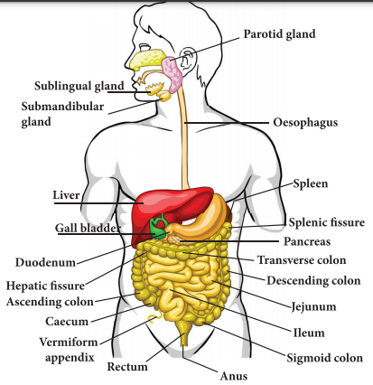
The digestive system consists of two sets of organs. They are as follows:
Alimentary canal Bracket OPEN digestive tract/gastrointestinal tract bracket closed: It is a passage starting from the mouth and ending with the anus.
Digestive glands: Glands associated with the alimentary canal are the salivary glands, gastric glands, pancreas, liver and intestinal glands.
Alimentary canal is a muscular coiled, tubular structure. It consists of mouth, buccal cavity, pharynx, oesophagus, stomach, small intestine Bracket OPEN consisting of duodenum, jejunum and ileum bracket closed, large intestine Bracket OPEN consisting of caecum, colon and rectum bracket closed and anus.
Mouth: The mouth leads into the buccal cavity. It is bound by two soft, movable upper and lower lips. The buccal cavity is a large space bound above by the palate Bracket OPEN which separates the wind pipe and food tube bracket closed, below by the throat and on the sides by the jaws. The jaws bear teeth.
Teeth: Teeth are hard structures meant for holding, cutting, grinding and crushing the food. In human beings two sets of teeth Bracket OPEN Diphyodont bracket closed are developed in their life time. The first appearing set of 20 teeth called temporary or milk teeth are replaced by the second set of thirty two permanent teeth, sixteen in each jaw. Each tooth has a root fitted in the gum Bracket OPEN Theocodont bracket closed. Permanent teeth are of four types Bracket OPEN Heterodont bracket closed, according to their structure and function namely incisors, canines, premolars and molars.
Table 20.2 Types of teeth and their functions table was given below
Types of teeth |
Number of teeth |
Functions |
Incisors |
8 |
Cutting and biting |
Canines |
4 |
Tearing and piercing |
Premolars |
8 |
Crushing and grinding |
Molars |
12 |
Crushing, grinding and mastication |
Dental formula represents the number of different type of teeth present in each half of a jaw Bracket OPEN upper and lower jaw bracket closed. The types of teeth are denoted as incisors Bracket OPEN I bracket closed, canine Bracket OPEN c bracket closed, premolars Bracket OPEN p m bracket closed and molars Bracket OPEN m bracket closed. The dental formula is presented as:
For Milk teeth in each half of upper and lower jaw:
2,1,2 divided by 2,1,2 = 10 into 2 = 20
For Permanent teeth in each half of upper and lower jaw:
2,1,2,3 divided by 2,1,2,3 = 16 into 2 = 32
Figure 20.2 Different kinds of teeth image was given below
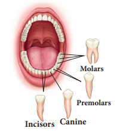
Box item open
Look at the pictures given below and answer the questions that follow:
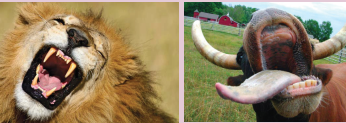
1. Are the teeth of animals similar to ours question mark
2. How is the shape of their teeth related to their food habit question mark box item ends
Salivary glands: Three pairs of salivary glands are present in the mouth cavity. They are: parotid glands, sublingual glands and submaxillary or submandibular glands
a. Parotid glands are the largest salivary glands, which lie in the cheeks in front of the ears Bracket OPEN in Greek Par near otid ear bracket closed.
b. Sublingual glands are the smallest glands and lie beneath the tongue.
c. Submaxillary or Submandibular glands lie at the angles of the lower jaw.
Figure 20.3 Salivary glands image was given below
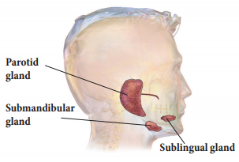
The salivary glands secrete a viscous fluid called saliva, approximately 1.5 liters per day. It digests starch by the action of the enzyme ptyalin Bracket OPEN amylase bracket closed in the saliva which converts starch Bracket OPEN polysaccharide bracket closed into maltose Bracket OPEN disaccharide bracket closed. Saliva also contain an antibacterial enzyme called lysozyme.
Tongue: The tongue is a muscular, sensory organ which helps in mixing the food with the saliva. The taste buds on the tongue help to recognize the taste of food. The masticated food in the buccal cavity becomes a bolus which is rolled by the tongue and passed through pharynx into the oesophagus by swallowing. During swallowing, the epiglottis Bracket OPEN a muscular flap-like structure at the tip of the glottis, beginning of trachea bracket closed closes and prevents the food from entering into trachea Bracket OPEN wind pipe bracket closed.
Pharynx: The pharynx is a membrane lined cavity behind the nose and mouth, connecting them to the oesophagus. It serves as a pathway for the movement of food from mouth to oesophagus.
Oesophagus:
Oesophagus or the food pipe is a muscular-membranous canal about 22 cm in length. It conducts food from pharynx to the stomach by peristalsis Bracket OPEN wave-like movement bracket closed produced by the rhythmic contraction and relaxation of the muscular walls of alimentary canal.
Stomach: The stomach is a wide J-shaped muscular organ located between oesophagus and the small intestine. The gastric glands present in the inner walls of the stomach secrete gastric juice. The gastric juice is colourless, highly acidic, containing mucus, hydrochloric acid and enzymes rennin Bracket OPEN in infants bracket closed and pepsin.
Inactive pepsinogen is converted to active pepsin which acts on the proteins in the ingested food. Hydrochloric acid kills the bacteria swallowed along with food and makes the medium acidic while the mucus protects the wall of the stomach. The action of the gastric juice and churning of food in the stomach convert the bolus into a semi digested food called chyme. The chyme moves to the intestine slowly through the pylorus.
Box item open
Rennin: Causes curdling of milk protein caesin and increases digestion of proteins.
Renin: Converts angiotensinogen to angiotensin and regulate the absorption of water and Na plus from glomerular filtrate. Box item ends
Small intestine: The small intestine is the longest part of the alimentary canal, which is a long coiled tube measuring about 5 to 7 m. It comprises three parts- duodenum, jejunum and ileum.
a. Duodenum is C-shaped and receives the bile duct Bracket OPEN from liver bracket closed and pancreatic duct Bracket OPEN from pancreas bracket closed.
b. Jejunum is the middle part of the small intestine. It is a short region of the small intestine. The secretion of the small intestine is intestinal juice which contains the enzymes like sucrase, maltase, lactase and lipase.
c. Ileum forms the lower part of the small intestine and opens into the large intestine. Ileum is the longest part of the small intestine. It contains minute finger like projections called villi Bracket OPEN one millimeter in length bracket closed where absorption of food takes place. They are approximately 4 million in number. Internally, each villus contains fine blood capillaries and lacteal tubes,
The small intestine serves both for digestion and absorption. It receives the bile from liver and the pancreatic juice from pancreas in the duodenum. The intestinal glands secrete the intestinal juices.
Box item open
William Beaumont Bracket OPEN 1785-1853 bracket closed
William Beaumont was a surgeon who was known as the ‘Father of Gastric Physiology’. Based on his observations he concluded that the stomach’s strong hydrochloric acid played a key role in digestion. Box item ends
It is the largest digestive gland of the body which is reddish brown in colour. It is divided into two main lobes, right and left lobes. The right lobe is larger than the left lobe. On the under surface of the liver, gall bladder is present. The liver cells secrete bile which is temporarily stored in the gall bladder. Bile is released into small intestine when food enters in it. It has bile salts Bracket OPEN sodium glycolate and sodium tauraglycolate bracket closed and bile pigments Bracket OPEN bilirubin and biliviridin bracket closed. Bile salts help in the digestion of fats by bringing about their emulsification Bracket OPEN conversion of large fat droplets into small ones bracket closed.
Controls blood sugar and amino acid levels.
Synthesizes foetal red blood cells.
Produces fibrinogen and prothrombin, used for clotting of blood.
Destroys red blood cells.
Stores iron, copper, vitamins A and D
Produces heparin Bracket OPEN an anticoagulant bracket closed.
Excretes toxic and metallic poisons.
Detoxifies substances including drugs and alcohol.
Pancreas: It is a lobed, leaf shaped gland situated between the stomach and duodenum. Pancreas acts both as an exocrine gland and as an endocrine gland. The exocrine part of the pancreatic gland secretes pancreatic juice which contains three enzymes- lipase, trypsin and amylase which acts on fats, proteins and starch respectively. The gland’s upper surface bears the islets of Langerhans which have endocrine cells and secrete hormones in which alpha Bracket OPEN alpha bracket closed cells secrete glucagon and β Bracket OPEN beta bracket closed cells secrete insulin.
Figure 20.4 Bile duct and Pancreatic duct opening into duodenum image was given below
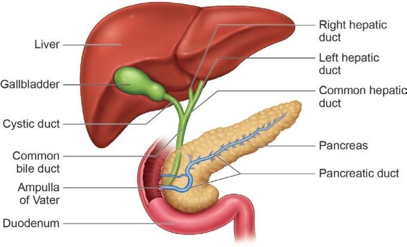
The intestinal glands secrete intestinal juice called succus entericus which contains enzymes like maltase, lactase, sucrase and lipase which act in an alkaline medium. From the duodenum the food is slowly moved down to ileum, where the digested food gets absorbed
a. Absorption of food: Absorption is the process by which nutrients obtained after digestion are absorbed by villi and circulated throughout the body by blood and lymph and supplied to all body cells according to their requirements.
b. Assimilation of food: Assimilation means the incorporation of the absorbed food materials into the tissue cells as their internal and homogenous component. The final products of fat digestion Bracket OPEN fatty acids and glycerol bracket closed are again converted into fats and excess fats are stored in adipose tissue. The excess sugars are converted into a complex polysaccharide, glycogen in the liver. The amino acids are utilized to synthesize different proteins required for the body.
The small intestine is about 5 m long and is the longest part of the digestive system. The large intestine is a thicker tube, but is about 1.5 m long. Box item ends
Large intestine: The unabsorbed and undigested food is passed into the large intestine. It extends from the ileum to the anus. It is about 1.5 meters in length. It has three parts- caecum, colon and rectum.
The caecum is a small blind pouch like structure situated at the junction of the small and large intestine. From its blind end a finger – like structure called vermiform appendix arises. It is a vestigeal Bracket OPEN functionless bracket closed organ in human beings
The colon is much broader than ileum. It passes up the abdomen on the right Bracket OPEN ascending colon bracket closed, crosses to the left just below the stomach Bracket OPEN transverse colon bracket closed and down on the left side Bracket OPEN descending colon bracket closed. The rectum is the last part which opens into the anus. It is kept closed by a ring of muscles called anal sphincter which opens when passing stools.
The undigested or unassimilated portion of the ingested food material is thrown out from the body through the anal aperture as faecal matter. This is known as egestion or defaecation.
Box item open
Construct a model of the human digestive system using simple materials like funnel, pipe, cellotape and clean bag. Label its parts and write which parts help in the various steps of digestion.box item ends
Table 20.3 Chart showing the Digestive Enzymes
Digestive glands |
Enzymes |
Substrate Bracket OPEN nutrient bracket closed |
Products of digestion |
Salivary glands |
Ptyalin Bracket OPEN Salivary amylase bracket closed |
Starch |
Maltose |
Gastric glands |
Pepsin |
Proteins |
Peptones |
Rennin Bracket OPEN in infants bracket closed |
Milk protein or caseinogen |
Curdles milk to produce casein protein |
|
Pancreas |
Pancreatic amylase |
Starch |
Maltose |
Trypsin |
Proteins and peptones |
Peptides and amino acids |
|
Chymotrypsin |
Protein |
Proteoses, Peptones, Polypeptide, tri and dipepetides |
|
Pancreatic lipase |
Emulsified fats |
Fatty acids and Glycerol |
|
Intestinal glands |
Maltase |
Maltose |
Glucose and Glucose |
Lactase |
Lactose |
Glucose and Galactose |
|
Sucrase |
Sucrose |
Glucose and Fructose |
|
Lipase |
Fats |
Fatty acids and Glycerol |
Image was given below
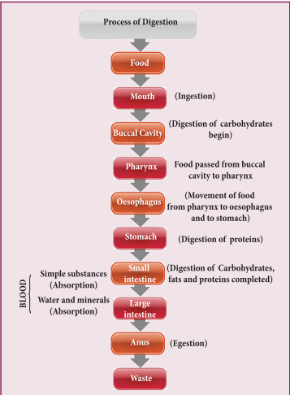
20.2 Human Excretory System
Metabolic activities continuously take place in living cells. All metabolic products produced by the biochemical reactions are not utilized by the body because certain nitrogenous toxic waste substances are also produced. They are called excretory products. In human beings urea is the major excretory product. The tissues and organs associated with the removal of waste products constitute the excretory system.
The human excretory system consists of a pair of kidney which produce the urine, a pair of ureters which conduct the urine from kidneys to the urinary bladder, where urine is stored temporarily and urethra through which the urine is voided by bladder contractions.
If the waste products are accumulated and not eliminated, they become harmful and poisonous to the body. Hence, excretion plays an important role in maintaining the homeostatic condition of the body.
Some of the excretory organs other than kidneys are skin Bracket OPEN removes small amounts of water, urea and salts in the form of sweat bracket closed and lungs Bracket OPEN eliminate carbon-dioxide and water vapour through exhaling bracket closed.
Figure 20.5 Excretory system image was given below
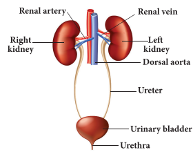
Skin is the outer most covering of the body. It stretches all over the body in the form of a layer. It accounts for 15 percent of an adult’s human body weight. There are many structures and glands derived from the skin. It eliminates metabolic wastes through perspiration.
The human body functions normally at a temperature of about 37 degree C. When it gets hot sweat glands start secreting sweat, which contains water with small amounts of other chemicals like ammonia, urea, lactic acid and salts Bracket OPEN mainly sodium chloride bracket closed. The sweat passes through the pores in the skin and gets evaporated.
Kidneys are bean-shaped organs reddish brown in colour. The kidneys lie on either side of the vertebral column in the abdominal cavity attached to the dorsal body wall. The right kidney is placed lower than the left kidney as the liver takes up much space on the right side. Each kidney is about 11 cm long, 5 cm wide and 3 cm thick. The kidney is covered by a layer of fibrous connective tissue, the renal capsules, adipose capsule and a fibrous membrane.
Internally the kidney consists of an outer dark region, the cortex and an inner lighter region, the medulla. Both of these regions contain uriniferous tubules or nephrons. The medulla consists of multitubular conical masses called the medullary pyramids or renal pyramids whose bases are adjacent to cortex. On the inner concave side of each kidney, a notch called hilum is present through which blood vessels and nerves enter in and the urine leaves through the Ureter.
Ureters: Ureters are thin muscular tubes emerging out from the hilum. Urine enters the ureter from the renal pelvis and is conducted along the ureter by peristaltic movements of its walls. The ureters carry urine from kidney to urinary bladder.
Urinary bladder:Urinary bladder is a sac-like structure, which lies in the pelvic cavity of the abdomen. It stores urine temporarily.
Urethra: Urethra is a membranous tube, which conducts urine to the exterior. The urethral sphincters keep the urethra closed and opens only at the time of micturition Bracket OPEN urination bracket closed.
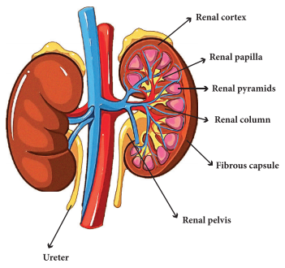
Figure 20.6 Longitudinal section of human kidney
1. Maintains the fluid and electrolytes balance in our body.
2. Regulates acid-base balance of blood.
3. Maintains the osmotic pressure in blood and tissues.
4. Helps to retain the important plasma constituents like glucose and amino acids.
Each kidney consists of more than one million nephrons. Nephrons or uriniferous tubules are structural and functional units of the kidneys. Each nephron consists of Renal corpuscle or Malphigian corpuscle and renal tubule. The renal corpuscle consists of a cup-shaped structure called Bowman’s capsule containing a bunch of capillaries called glomerulus. Blood enters the glomerular capillaries through afferent arterioles and leaves out through efferent arterioles. The Bowman’s capsule continues as the renal tubule which consists of three regions proximal convoluted tubule, U-shaped hair pin loop, the loop of Henle and the distal convoluted tubule. The distal convoluted tubule opens into the collecting tubule. The nitrogenous wastes are drained into renal pelvis which leads to ureters and stored in the urinary bladder. Urine is expelled out through the urethra.
The process of urine formation includes the following three stages.
Glomerular filtration:Urine formation begins with the filtration of blood through epithelial walls of the glomerulus and Bowman’s capsule. The filtrate is called as the glomerular filtrate. Both essential and non-essential substances present in the blood are filtered.
Tubular reabsorption: The filtrate in the proximal tubule consists of essential substances such as glucose, amino acids, vitamins, sodium, potassium, bicarbonates and water that are reabsorbed into the blood by a process of selective reabsorption.
Tubular secretion: Substances such as H plus or K plus ions are secreted into the tubule. This tubular filtrate is finally known as urine, which is hypertonic in man. Finally the urine passes into collecting ducts to the pelvis and through the ureter into the urinary bladder. When the urinary bladder is full the urine is expelled out through the urethra. This process is called micturition. A healthy person excretes one to two litres of urine per day.
Figure 20.7 Structure of Nephron Image was given below
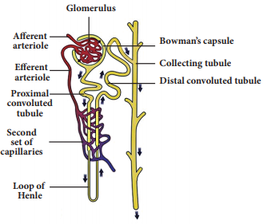
Box item open
Two healthy kidneys contain a total of about 2 million nephrons, which filter about 170-180 litres of blood per day. The kidneys reabsorb and redistribute 99 percent of the blood volume and only 1 percent of the blood filtered becomes urine. box item ends
Dialysis or Artificial kidney :When kidneys lose their filtering efficiency, excessive amount of fluid and toxic waste accumulate in the body. This condition is known as kidney Bracket OPEN renal bracket closed failure. For this, an artificial kidney is used to filter the blood of the patient. The patient is said to be put on dialysis and the process of purifying blood by an artificial kidney is called haemodialysis. When renal failure cannot be treated by drug or dialysis, the patients are advised for kidney transplantation.
Box item open
In 1954, Joseph E.Murray and his colleagues at Peter Bent Brigham Hospital in Boston, USA performed first succesful kidney transplant between Ronald and Richard Herrick who were identical twins. The recepient Richard Herrick died after 8 years of transplantation. box item ends
Image was given below
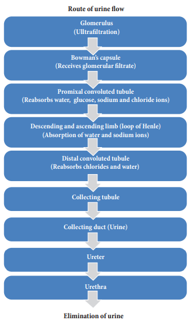
The capacity to reproduce is one of the most important characteristics of living beings.There is a distinct sexual dimorphism in human beings That is, , males are visibly different from females in physical build up, external genital organs and secondary sexual characters.
The reproductive systems of male and female consist of many organs which are distinguished as primary and secondary sex organs.
The primary sex organs are gonads, which produce gametes Bracket OPEN sex cells bracket closed and secrete sex hormones. The secondary sex organs include the genital ducts and glands which help in the transportation of gametes and enable the reproductive process. The reproductive organs become functional after attaining sexual maturity. In males, sexual maturity is attained at the age of 13-14 years. In females, it is attained at the age of 11-13 years. This age is known as the age of puberty. During sexual maturity, hormonal changes take place in males and females and secondary sexual characters are developed under the influence of these hormones.
Human male reproductive system consists of testes Bracket OPEN primary sex organs bracket closed, scrotum, vas deferens, urethra, penis and accessory glands.
Testes: A pair of testes lies outside the abdominal cavity of the male. These testes are the male gonads, which produce male gametes Bracket OPEN sperms bracket closed and male sex hormone Bracket OPEN Testosterone bracket closed. Along the inner side of each testis lies a mass of coiled tubules called epididymis. The Sertoli cells of the testes provide nourishment to the developing sperms.
Scrotum: The scrotum is a loose pouch-like sac of skin which is divided internally into right and left scrotal sacs by muscular partition. The two testes lie in the respective scrotal sacs. It also contains many nerves and blood vessels. The scrotum acts as a thermoregulator organ and provides an optimum temperature for the formation of sperms. The sperms develop at a temperature of 1 to 3 degree C lower than the normal body temperature.
Vas deferens: It is a straight tube which carries the sperms to the seminal vesicles. The sperms are stored in the seminal plasma of seminal vesicle, which is rich in fructose, calcium and enzymes. Fructose is a source of energy for the sperm. The vas deferens along with seminal vesicles opens into ejaculatory duct which expels the sperm and its secretions from seminal vesicles into the urethra.
Urethra: It is contained inside the penis and conveys the sperms from the vas deferens which pass through the urethral opening. The accessory glands associated with the male reproductive system consist of seminal vesicles, prostate gland and Cowper’s glands. The secretions of these glands form seminal fluid and mixes with the sperm to form semen. This fluid provides nutrition and helps in the transport of sperms.
Figure 20.8 Male reproductive system image was given below
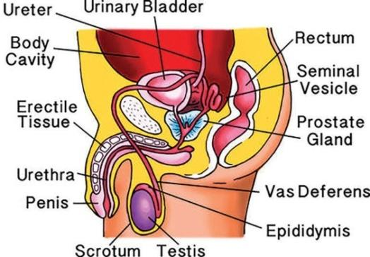
Box item open
The sperm is the smallest cell in the male body. A normal male produces more than 500 billion sperm cells in his life time. The process of formation of sperms is known as spermatogenesis. Box item ends
The female reproductive system consists of ovaries Bracket OPEN primary sex organs bracket closed, oviducts, uterus and vagina.
Ovaries: A pair of almond-shaped ovaries is located in the lower part of abdominal cavity near the kidneys in female. The ovaries are the female gonads, which produce female gametes Bracket OPEN eggs or ova bracket closed and secrete female sex hormones Bracket OPEN Oestrogen and Progesterone bracket closed.A mature ovary contains a large number of ova in different stages of development.
Fallopian tubes Bracket OPEN Oviducts bracket closed: These are paired tubes originating from uterus, one on either side. The terminal part of fallopian tube is funnel-shaped with finger-like projections called fimbriae lying near the ovary. The fimbriae pick up the ovum released from ovary and push it into the fallopian tube.
Uterus: Uterus is a pear-shaped muscular, hollow structure present in the pelvic cavity. It lies between urinary bladder and rectum.Development of foetus occurs inside the uterus. The narrower lower part of uterus is called cervix, which leads into vagina.
Vagina: The uterus narrows down into a hollow muscular tube called vagina. It connects cervix and the external genitalia. It receives the sperms, acts as birth canal during child birth Bracket OPEN parturition bracket closed.
Figure 20.9 Female reproductive system image was given below
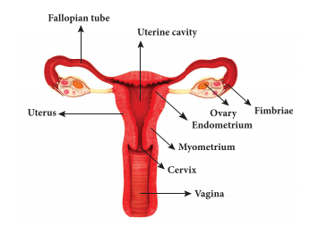
Box item open
More to Know
An ovum is the largest human cell. The process of formation of ova is known as oogenesis box item ends
All the organ systems work together in coordination to maintain the body in a homeostatic condition of an organism.
Alimentary canal consists of mouth, buccal cavity, pharynx, oesophagus, stomach, small intestine Bracket OPEN consisting of duodenum, jejunum and ileum bracket closed, large intestine Bracket OPEN consisting of caecum, colon and rectum bracket closed and anus.
The five stages of nutrition process include ingestion, digestion, absorption, assimilation and egestion.
The small intestine serves both for digestion and absorption.
The human excretory system consists of a pair of kidney, which produce the urine.
The process of urine formation includes the following three stages: Glomerular filtration, tubular reabsorption and tubular secretion.
The reproductive organ of male is testis and female is ovary which are distinguished as primary sex organs.
Emulsification Conversion of large fat droplets into smaller ones.
Enzymes Substances produced by living organisms which acts as a catalyst to bring about specific biochemical reactions.
Homeostasis Tendency of the body to seek and maintain a balance condition or equilibrium within its internal environment.
Mastication Bracket OPEN Chewing bracket closed Process by which food is crushed and ground by teeth.
Metabolism Sum total of all chemical and energy changes taking place in an organism.
Osmoregulation Maintenance of constant osmotic pressure in the fluids of an organism by the control of water and salt concentration.
Regurgitation Act of bringing swallowed food back into the mouth.
Toxic substance Substances that can be poisonous or cause health effects to living organisms.